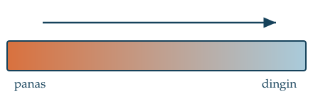
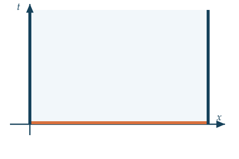

Matematika Advance • Teknik Sipil
Definisi • Orde & Linearitas • Tiga Persamaan Fundamental • Klasifikasi • Syarat Awal & Batas
Mohammad Jamhuri · Universitas Islam Negeri Maulana Malik Ibrahim Malang
Setelah pertemuan ini, Anda mampu:
Rujukan: Buku, Bab 1.
Sebatang logam dipanaskan di salah satu ujungnya.

Tentukan mana yang PDP:
Untuk $A\,u_{xx} + B\,u_{xy} + C\,u_{yy} + \cdots = G$, hitung diskriminan:
$$B^2 - 4AC \; \begin{cases} > 0 & \text{hiperbolik} \\ = 0 & \text{parabolik} \\ < 0 & \text{eliptik} \end{cases}$$Tipe menentukan watak solusi: merambat / meluruh / tunak, dan metode yang cocok.
Klasifikasikan:
$$\text{(a)}\ u_{xx} + 4u_{xy} + u_{yy} = 0 \qquad \text{(b)}\ y\,u_{xx} + u_{yy} = 0$$$u_{xx} + u_{yy} = 0$ dipenuhi oleh
$$u = x, \quad u = xy, \quad u = x^2 - y^2, \quad u = e^x\cos y, \; \dots$$| Jenis | Bentuk di $x=0$ | Makna fisis (panas) |
|---|---|---|
| Dirichlet | $u(0,t) = \alpha(t)$ | suhu ujung ditetapkan |
| Neumann | $u_x(0,t) = \beta(t)$ | fluks ditetapkan; $\beta=0$: terisolasi |
| Robin | $u_x(0,t) + h\,u(0,t) = \gamma(t)$ | pertukaran dgn lingkungan |
Jawaban: es → Dirichlet $u=0$; styrofoam → Neumann $u_x = 0$.

alas oranye: SA, $u(x,0) = f(x)$
kedua sisi biru: SB
di dalam domain: $u_t = k\,u_{xx}$
Masalah PDP disebut terformulasi baik bila solusinya:
Dr. Mohammad Jamhuri · UIN Maulana Malik Ibrahim Malang